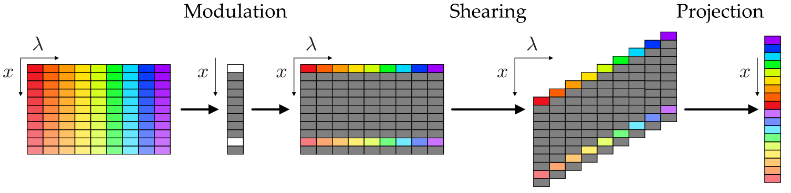
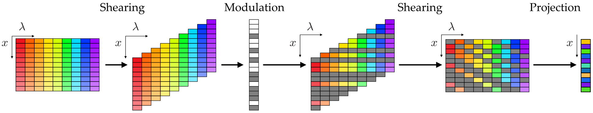

Coded Aperture Spectral Snapshot Imaging
Contents
\(\begin{align} \newcommand{transp}{^\intercal} \newcommand{F}{\mathcal{F}} \newcommand{Fi}{\mathcal{F}^{-1}} \newcommand{inv}{^{-1}} \newcommand{stochvec}[1]{\mathbf{\tilde{#1}}} \newcommand{argmax}[1]{\underset{#1}{\mathrm{arg\, max}}\,} \newcommand{argmin}[1]{\underset{#1}{\mathrm{arg\, min}}\,} \end{align}\)
Computational Imaging
Coded Aperture Spectral Snapshot Imaging#
Content#
Introduction
Conventional RGB-camera
Popular CASSI architectures
Introduction#
Most camera systems capable of capturing color information filter incident light by means of three spectral filters with peaks in the red, green and blue regions of the spectrum. This design has been chosen to mimic the human visual system with the three different cone cells responsible for human perception of color.
However, for many fields of applications, such as remote sensing, materials science, biophotonics, environmental monitoring, smart agriculture or food, a finer sampling of the spectral information can be of utter importance.
Simultaneously capturing high-resolution spatial and spectral information within the classical Nyquist-Shannon sampling regime is currently only possible by performing time-multiplexed measurements.
Typical classical sensor concepts for capturing spectral information are
point spectrometers,
hyperspectral line scan cameras and
multispectral color filter cameras.
Point spectrometers and hyperspectral line scan cameras use prisms or diffraction gratings to map the spectral dimension of the incident light onto a spatial dimension by exploiting the fact that prisms and gratings transmit light with different angles depending on its wavelength.
The resulting spectrally decomposed light is then captured by a sensor oriented in such a way so that one of its spatial coordinates encodes the wavelength of the incident light.
Point spectrometers capture the spectrum of a single measurement point whereas hyperspectral line scan cameras retain one dimension of the sensor for spatial information so that the spectrum of a line in the measurement field can be acquired.
Multispectral cameras sacrifice spatial resolution to gain some spectral resolution by employing larger filter arrays, e.g., \(5 \times 5\), similar to the red, green and blue filters of common color cameras.
So-called coded aperture spectral snapshot imaging (CASSI) cameras use computational imaging methods to undersample the high-dimensional spatio-spectral data and then computationally reconstruct the sought data by incorporating suitable prior information (i.e., regularizers).
They are called snapshot imaging systems, as they only require to capture a single measurement (i.e., a single image).
Typical CASSI setups modulate the image formation process in two ways: they spatially modulate the amplitude via binary coded aperture masks and they shear the image with respect to the present wavelengths via prisms or diffraction gratings.
Conventional RGB-camera#
The following figure shows the sampling scheme of a conventional RGB-camera for a single spatial coordinate \(x\) and the spectral coordinate \(\lambda\):
The modulation is performed by the RGB Bayer filter pattern on the sensor and the projection along the spectral dimension is performed by the sensor elements which integrate over the modulated spectra.
Let \(\mathbf{X}\in\mathbb{R}^{S\times N}\) contain the spectra with length \(S\) as columns for each of the \(N\) spatial positions and let \(\mathbf{x}\in \mathbb{R} ^{S\cdot N}\) denote its vectorized form.
The modulation can be modeled via a diagonal matrix \(\mathrm{diag}(\mathbf{p})\in \mathbb{R} ^{S\cdot N \times S\cdot N}\) with the modulation pattern \(\mathbf{p}\in \mathbb{R}^{S\cdot N} \) containing the spectral filter coefficients for every spatial and spectral sampling point.
The modulated spectra are then given by \(\mathrm{diag}(\mathbf{p})\mathbf{x}\).
The projection along the spectral dimension can be modeled via a matrix \(\boldsymbol{\Sigma}\in \mathbb{R} ^{N\times S\cdot N}\) containing blocks of ones of length \(S\) in every row that are shifted by \(S\) from row to row.
Hence, the overall forward model is given by:
\(\begin{align} \mathbf{y} &= \underbrace{\boldsymbol{\Sigma} \mathrm{diag}(\mathbf{p})}_{=:\mathbf{A}} \mathbf{x} \\ &= \mathbf{Ax} \,. \end{align}\)
Popular CASSI architectures#
Fully sampling the spatio-spectral data even with temporal resolution is (currently) infeasible although because of the huge amount of data that would have to be processed and stored:
A single second of uncompressed hyperspectral video with 60 spectral bands and 1 megapixel spatial resolution yields about 2 GB data.
In the following we will study several undersampling CASSI architectures which greatly reduce the necessary amount of data that has to be captured and we will derive the corresponding image formation forward models.
Prism-mask video imaging spectrometry (PMVIS)#
The sampling scheme of a PMVIS system is shown in the following Figure:
The incident light is first spatially modulated by an aperture mask with uniformly spaced holes.
The transmitted light is then sheared by a prism and integrated by the sensor.
The spatial shearing and the position of the holes in the aperture mask are adjusted with respect to each other so that there is no overlap on the sensor.
Again, \(\mathbf{x} \in \mathbb{R} ^{S\cdot N}\) represents the vector form of \(\mathbf{X} \in \mathbb{R}^ {N \times S}\).
Let \(\mathbf{p} \in \mathbb{R} ^{S\cdot N}\) denote the spatial modulation pattern (which has blocks of ones of length \(S\) for every spatial position that should not be blocked).
Then, the result of the modulation is given by \(\mathrm{diag}(\mathbf{p})\mathbf{x}\).
The spatial, spectrally dependent shearing can be modeled via a matrix \(\mathbf{T}^{(S\cdot N + \xi) \times (S\cdot N)}\), with \(\xi = S(S-1)\) denoting the number of zeros which have to be added.
The projection can be represented by a matrix \(\boldsymbol{\Sigma} \in \mathbb{R} ^{(N + S - 1) \times (S\cdot N + \xi)}\) which selects the elements of sheared data vector that should be combined to finally yield the measurement \(\mathbf{y} \in \mathbb{R} ^{N+S-1}\).
Hence, the overall forward model is given by:
\(\begin{align} \mathbf{y} &= \underbrace{\boldsymbol{\Sigma}\mathbf{T}\mathrm{diag}(\mathbf{p})}_{=:\mathbf{A}}\mathbf{x} \\ &= \mathbf{Ax} \,. \end{align}\)
Due to the non-overlapping organization of the sheared spectral information, there is a known correspondence between spatial positions on the sensor and spectral bands and spatial sampling positions.
Hence, no special reconstruction algorithms have to be used.
However, this comes at the cost of reduced spatial resolution.
Details about the optical setup and resulting images can be found in the publication A Prism-Mask System for Multispectral Video Acquisition by Xun Cao et al..
Single dispersive coded aperture snapshot imaging (SD-CASSI)#
The sampling scheme of a SD-CASSI system is shown in the following Figure:
The sampling scheme of SD-CASSI is quite similar to PMVIS, however, in SD-CASSI the modulation pattern does not lead to spatially separated patterns after the dispersion.
Hence, no spatial resolution is sacrificed but a suitable reconstruction algorithm has to be employed to obtain the sought spatio-spectral data.
The forward model is the same as for PMVIS:
\(\begin{align} \mathbf{y} &= \underbrace{\boldsymbol{\Sigma}\mathbf{T}\mathrm{diag}(\mathbf{p})}_{=:\mathbf{A}}\mathbf{x} \\ &= \mathbf{Ax} \,, \end{align}\)
with the modulation pattern \(\mathbf{p}\), the shearing operator \(\mathbf{T}\) and the projection matrix \(\boldsymbol{\Sigma}\).
To obtain an estimate of the sought data \(\mathbf{x}\), a suitable reconstruction algorithm with adequate regularization has to be employed.
Details about the optical setup and resulting images can be found in the publication Single disperser design for coded aperture snapshot spectral imaging by Ashwin Wagadarikar et al..
Dual dispersive coded aperture snapshot imaging (DD-CASSI)#
The sampling scheme of a DD-CASSI system is shown in the following Figure:
Here, the incident spectrum is sheared, then modulated with a spatial binary pattern and then inversely sheared so that the individual spectral components are arranged back to their original correspondent spatial location.
The resulting spatio-spectral distribution is then integrated along the spectral domain by the sensor.
This approach has the benefit that the image recorded by the sensor is not spatially blurred as for SD-CASSI.
The forward model can be formalized as:
\(\begin{align} \mathbf{y} &= \underbrace{\boldsymbol{\Sigma}\mathbf{T}\transp\mathrm{diag}(\mathbf{p})\mathbf{T}}_{=:\mathbf{A}}\mathbf{x} \\ &= \mathbf{Ax} \,, \end{align}\)
with the modulation pattern \(\mathbf{p}\), the shearing operator \(\mathbf{T}\), the transposed, i.e., inverse shearing operator \(\mathbf{T}\transp\) and the projection matrix \(\boldsymbol{\Sigma}\).
Since the successive operations of shearing, modulation, inverse shearing is nothing else than applying a spatially and spectrally varying modulation to the input spatio-spectral data, the forward model can be written more compactly as:
\(\begin{align} \mathbf{y} = \underbrace{\boldsymbol{\Sigma}\mathrm{diag}(\mathbf{\tilde{T}p})}_{=:\mathbf{A}}\mathbf{x}\,, \end{align}\)
with \(\mathbf{\tilde{T}}\) representing the shearing operator that, when applied to the modulation pattern vector \(\mathbf{p}\), leads to the same modulation of the input data as the operators \(\mathbf{T}\transp\mathrm{diag}(\mathbf{p})\mathbf{T}\).
Details about the optical setup and resulting images can be found in the publication Single-shot compressive spectral imaging with a dual-disperser architecture by M. E. Gehm et al..